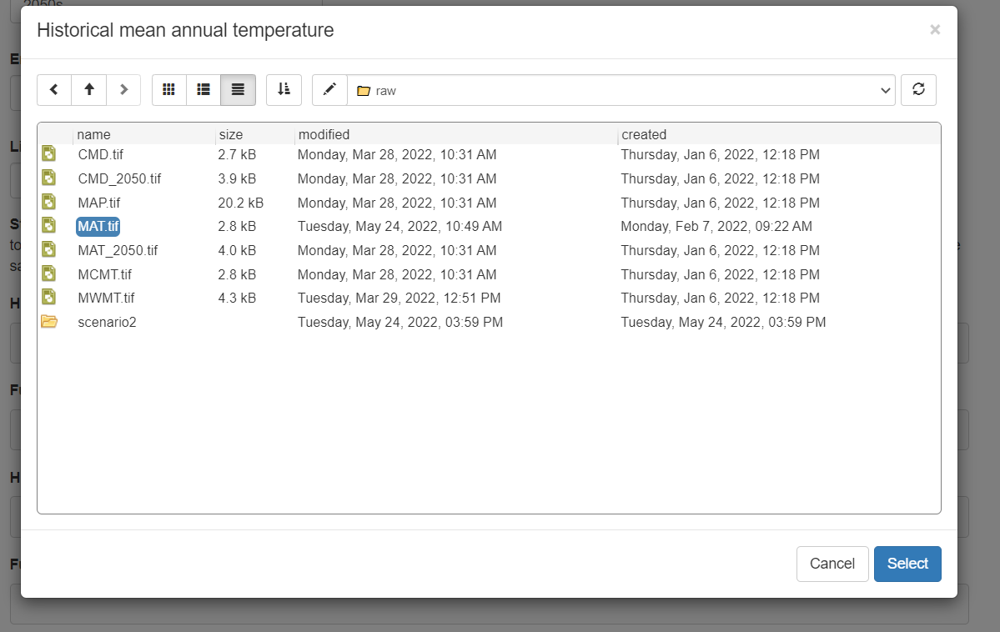
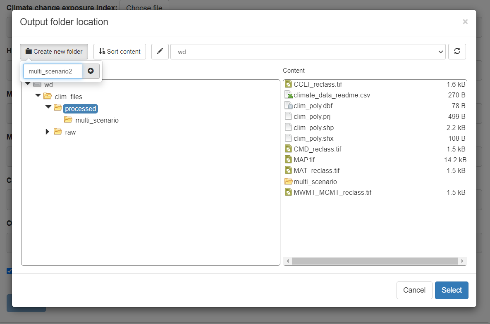

Custom Climate Data
If you wish to use a custom set of climate data to calculate the NatureServe Climate Change Vulnerability Index you will need to prepare the climate data into the form used to calculate the index. The raw climate data set should include rasters of:
- Mean annual temperature (MAT) for both historical and future time periods
- Climate moisture deficit (CMD) for both historical and future time periods
- Mean annual precipitation (MAP) for the historical time period
- Minimum coldest and warmest month temperatures (MCMT and MWMT) for the historical time period
- Optionally, a climate change exposure index (CCEI) raster
Climate data for multiple scenarios can be used to calculate the CCVI index for each scenario simultaneously, in which case the MAT and CMD for each future scenario is needed in the raw climate data set. The app will use the raw climate data to create the classified versions of the climate data that are used to calculate the index and save them in the selected folder.
Climate data sources
Step 1 is to acquire the necessary climate data. There are many options for where to acquire climate data depending on the desired climate change emissions scenario, General Circulation Model, or downscaling method you prefer. One good source for all of North America is from AdaptWest. On the AdpatWest page select the bioclimatic variables for the normal period and the desired future climate scenario(s). We recommend using the 1961-1990 normal period and the ensemble data for SSP2-4.5 and SSP5-8.5 2050s for the future. Save the downloaded data in a folder you can easily find.
The Climate Change Exposure Index (CCEI) for South America is available from NatureServe or use the one included with ccviR which covers all the Americas. If you wish to create a different CCEI raster you could follow adapt the code used in the ccviR package.
Launch the app
The data preparation app is launched by calling the
run_data_prep() function, which will launch the app in the
user’s default internet browser. All file selection windows will start
in the current working directory. To run the app with data stored in a
different folder you can call run_data_prep() with the
folder path as the first argument. For example, if all of the data is
stored in a subdirectory named “data” of the RStudio project where I am
calling the function I would call run_data_prep("data") to
avoid having to open the data folder every time I select a file.
Alternatively, the complete path to the data folder can be supplied
e.g. “C:/Users/username/Documents/path/to/folder” (Note that paths in R
must be supplied using forward slashes).
Describe the data
Step 2 is to describe the data. This information will be stored as a csv in the output folder with the processed climate data. It will be used to identify the data set and to list the scenarios included.
Select files
Step 3 is to upload the data. For each climate data variable click the “Choose file” button, navigate to the required file and click “Select”.

The climate data extent polygon is used to clip other polygons to the extent of the climate data. So for climate data covering North America a polygon of the boundaries of North America could be used. If a polygon is not supplied one can be created but the process can be slow.
Finally, choose a folder to save the processed data to. Make sure this folder is in a convenient place since you will need to supply it every time you use the CCVI app to calculate the index. The folder should be empty or contain climate files that you wish to overwrite. To create a new folder, select the parent folder and click “Create new folder” in the top left corner. Then type the new folder name and click the plus sign. The new folder will appear in the file explorer, click it and then click “Select”.

Once all the files are selected you can click “Process” to prepare the data. Do not continue until the message says “Processing Complete”.
Multiple scenarios
If you wish to calculate the CCVI for multiple climate change scenarios simultaneously you can create a climate change data set with multiple scenarios. Change the number of scenarios in the “How many future scenarios?” section.
The first scenario processed will determine the thresholds used to classify the temperature and moisture exposure based on the median and 1/2 the interquartile range. Therefore, we recommend processing the climate scenario with the lowest impact first so that index values are higher for more extreme scenarios. Future MAT and CMD must be provided for each additional scenario. The rest: MCMT, MWMT and MAP are not needed for additional scenarios because they are used to inform the species’ sensitivity based on its current range and historical climate so they will not change between scenarios.
More information
See the vignette("package_vignette", package = "ccviR")
for a more detailed walk through of how the categories in the exposure
rasters are determined.